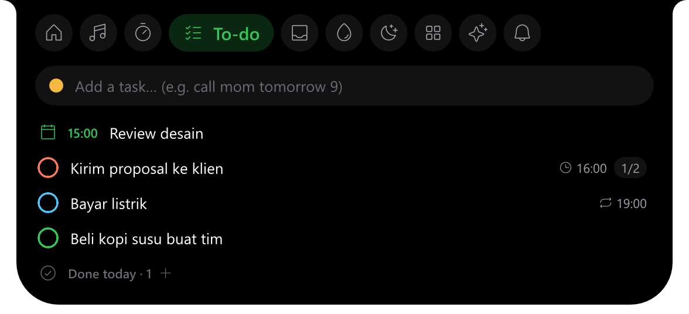
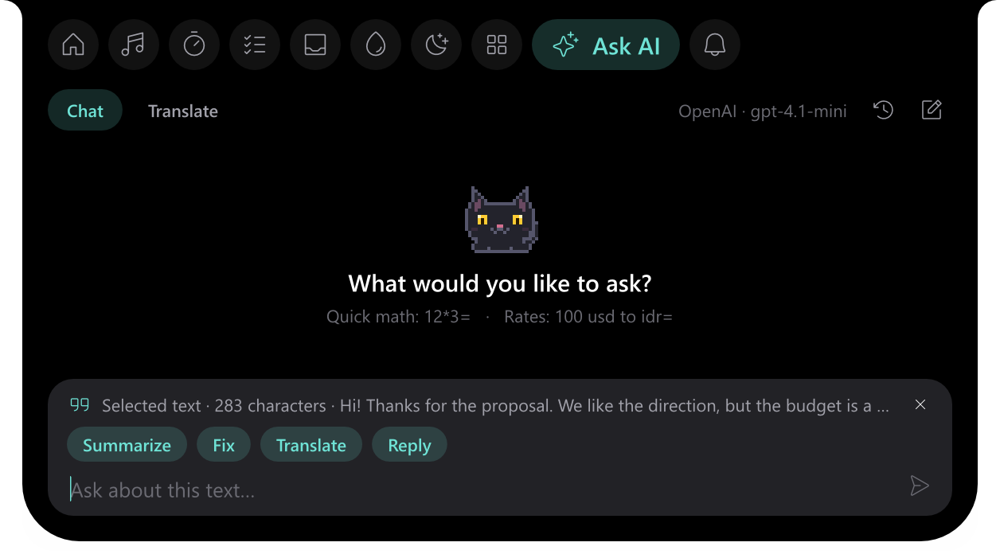
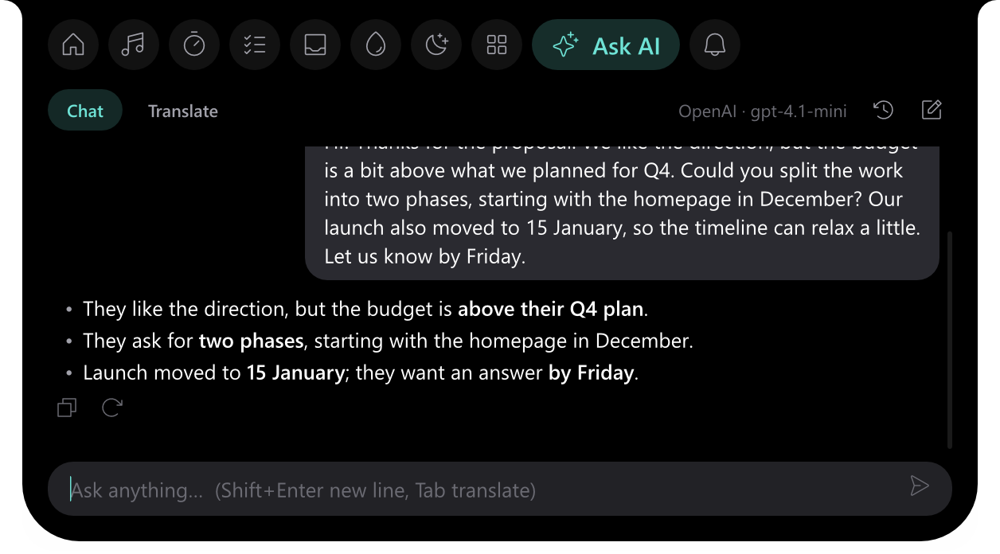
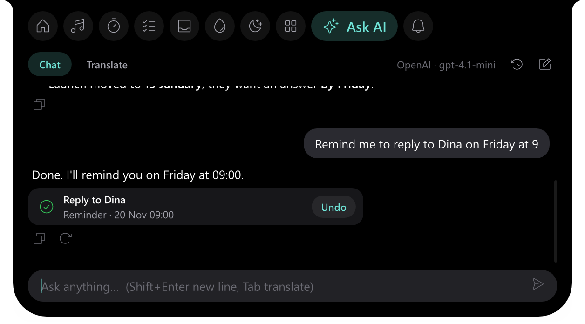
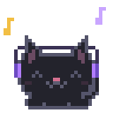
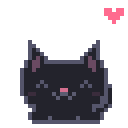
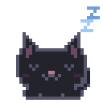
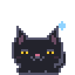

Try it: click the tabs
A living notch
for Windows.
A small black island at the top of your screen. Point at it for your music and lyrics, a focus timer, to-dos, Ask AI, your files and clipboard, prayer times and widgets. Kopi the cat keeps watch.
Download for WindowsFree · Windows 10 and 11 · 5.6 MB · no account
36 seconds, cut to the music. Every frame is the app itself, drawn by its own renderer with sample data.
A day with Nuppi
It sits closed and quiet at the top edge, and opens when you point at it. Here is what it shows through a working day.
-
Morning
Focus, with rain on
Pomodoro rounds that keep going through sleep, a seven-day chart and streaks. Rain, waves, wind or a soft hum play underneath. They are made in code and looped by Windows, so they cost no CPU.

-
Before lunch
Your day in one list
Type “rapat besok 9” or “call mom in 2h” and the due time is set. Checklists inside a task, repeating bills, quick add from anywhere with Ctrl+Alt+N, and your Google Calendar with a Join button for Meet, Zoom and Teams.

-
After lunch
Home, arranged your way
The clock, the one thing that matters right now (a meeting, the next prayer, a task due, the song playing) and small widgets you drag, resize, add and remove.

-
Afternoon
Music, with the words
Whatever plays through the Windows media controls (Spotify, YouTube Music in a browser, and more) with seek, shuffle, volume, and synced lyrics that keep the current line in the middle.

-
Before Asr
Prayer times, worked out on your PC
1,151 cities or your own location, seven calculation methods, the Hijri date and reminders. In Ramadan: imsak and iftar countdowns and a sahur reminder.

-
All day
A shelf for files and your clipboard
Drop files, links, text or images on the notch and drag them out later; your files are never moved. The clipboard history is encrypted, searchable and skips password managers. Save snippets to paste again.

Ask AI, on whatever you selected
Select text in any app and press Ctrl Alt Q. It lands in the notch with Summarize, Fix, Translate and Reply one click away. Ask in plain words and it can set reminders and to-dos or start a timer, each with Undo. Bring your own provider: OpenAI, Gemini, Groq, OpenRouter, or a local model with Ollama or LM Studio. Keys stay on your PC, encrypted.
-

1. Select and press the shortcut. The text arrives with four quick actions.
-

2. One click. A client's email, summed up in three points.
-

3. Ask it to act. “Remind me to reply on Friday at 9” sets the reminder, with Undo.
Kopi keeps you company
A 24-pixel black cat who lives in the notch and reacts to what you are doing. Pet him and he purrs.
Keeps an eye on things

Bobs along to your music

Perks up for a notification

Cheers when your tasks are done

Naps at night and while you focus

Droops when the battery runs low
Measured, not promised
A notch that is always on screen has to be cheap. Every night a test starts the release build on a clean Windows machine, lets it settle, measures CPU and memory from outside the process, and fails if any number goes over its budget.
| What | Measured | Budget | Share of budget |
|---|---|---|---|
| CPU at restNotch closed, nothing moving | 0.01% | 0.10% | |
| Memory at restWorking set, the RAM Windows reports | 8.1 MB | 25 MB | |
| CPU during a focus roundTimer counting down in the notch | 0.09% | 0.10% | |
| Memory with a full shelf100 shelf items and a full clipboard history | 8.0 MB | 80 MB | |
| CPU while Kopi sleepsAt night, nothing animates | 0.01% | 0.05% | |
| Frame time while animating95th percentile, scripted animations | 0.8 ms | 8 ms | |
| Start-upLaunch to first frame | 140 ms | 400 ms | |
| App sizenuppi.exe, everything included | 12.0 MB | 15 MB |
And the small things
- Copy text from the screen
- Ctrl+Alt+T, drag a box, and the text is on your clipboard. Offline, with Windows OCR.
- Notifications
- WhatsApp, Telegram and other Windows notifications in the notch, with the message on up to two lines. Show the title and message, the title only, or just the app name. One-time codes stay hidden until you copy them.
- System overlays
- Volume, brightness, Caps Lock, input language, charger, Wi-Fi and headphones, where your eyes already are.
- Widgets
- Weather, PC usage, the week, world clocks, a countdown and the moon phase.
- Water
- A daily goal with reminders that wait until your focus round ends.
- Your look
- Island or floating, minimal mode, Glass, an accent colour, Indonesian or English. Every option applies live.
Your data stays on your PC
- No account, no analytics, no telemetry.
- Clipboard history, chats and API keys are encrypted with Windows DPAPI.
- The network is used only by features you turn on: lyrics, weather, calendar, Ask AI and update checks.
- Every feature can be switched off completely, and your data exported or deleted from Settings.
Put Kopi on top of your screen
Free for Windows 10 (1809 or later) and Windows 11. It installs for your user only, no admin rights, and checks for updates itself.
Download for WindowsThe build is not code-signed yet, so SmartScreen may warn: choose More info, then Run anyway. Each release lists its SHA-256.